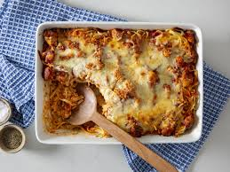

Chicken Parmesan Casserole

Delicious Chicken Parmesan Casserole
This easy chicken Parmesan casserole made with cooked chicken, pasta, marinara sauce, cheese, and crispy bread crumbs is a delicious twist to homemade chicken Parmesan.
Ingredients
- 2 cups rotini pasta
- 12 ounces cooked chicken, cubed
- 1 cup shredded mozzarella cheese
- 2 cups marinara sauce
- ½ cup seasoned bread crumbs
Steps
- Gather all ingredients. Preheat the oven to 350 degrees F (175 degrees C).
- Fill a large pot with lightly salted water and bring to a rolling boil over high heat. Cook rotini in boiling water until tender yet firm to the bite, about 8 minutes. Drain.
- Stir together cooked rotini, chicken, and mozzarella cheese in a large casserole dish.
- Pour marinara sauce over pasta mixture; sprinkle with bread crumbs. Cover the dish with aluminum foil.
- Bake in the preheated oven until cheese is melted, about 35 minutes.
- Serve and enjoy.
Home